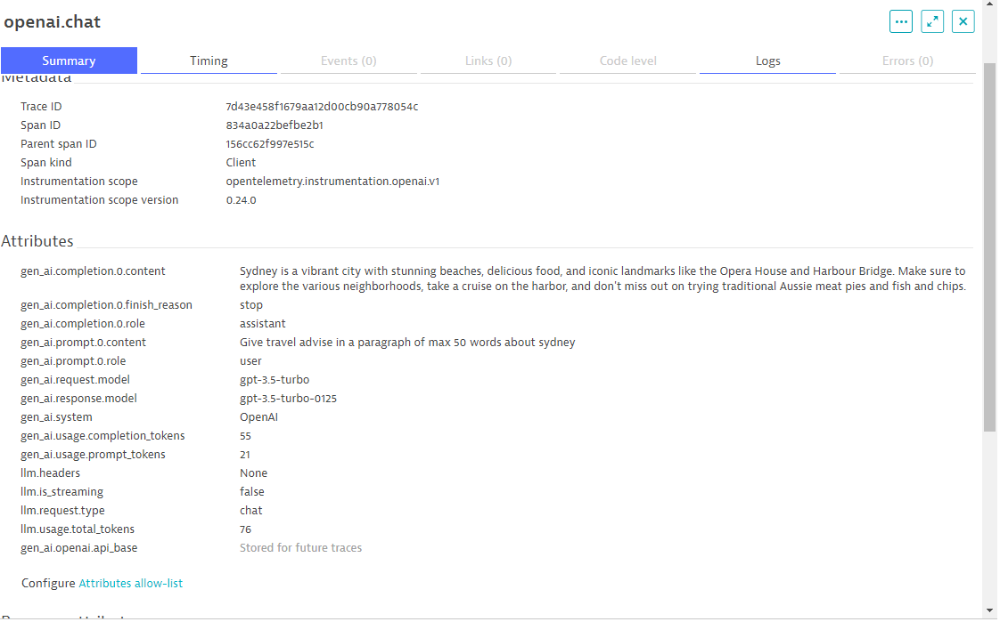

Visualising Data in Dynatrace#
Uploading the Dashboards#
This demo comes with several prebuilt dashboards. Do the following in Dynatrace.
- Save the contents of dynatrace/dashboards/openai/Travel-Advisor-Overview.json to your computer
- Press
Ctrl + kand search fordashboardsor select the icon from the left toolbar - Select the
Uploadbutton and upload the JSON file.
Repeat this process for all the dashboards inside dynatrace/dashboards/*
Distributed Traces#
The application emits distributed traces which can be viewed in Dynatrace:
- Press
ctrl + ksearch fordistributed traces - Traces for
/api/v1/completionare created for each call to either OpenAI or a call to the Weaviate cache.
Remember that only the very first requests for a given destination will go out to OpenAI. So expect many many more cached traces than "live" traces.
Trace with OpenAI#
A "full" call to OpenAI looks like this. Notice the long call halfway through the trace to openai.chat. These traces take much longer (3 seconds vs. 500ms).

Trace to Weaviate Cache#
A call which instead only hits the on-cluster Weaviate cache looks like this.
Notice that it is much quicker.
The response TTL (max time that a cached prompt is considered "fresh") is checked and if the response is "still fresh" (ie. TTL < stale time) the cached value is returned.
Notice the cached prompt is 123s. The max age (TTL is (by default) 60 minutes. Therefore the prompt is not outdated and thus returned to the user as valid.
🎉 Demo Complete#
The demo is now complete. Continue to cleanup your environment.